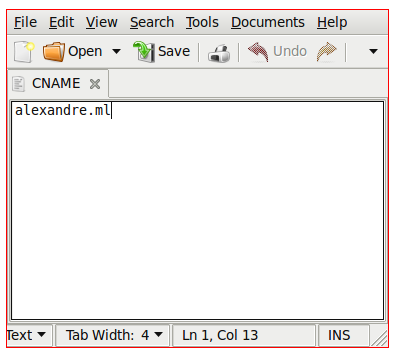
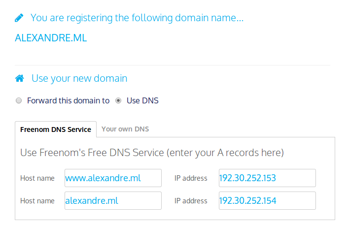

<!DOCTYPE html>
<html>
<title>How to Make a Website</title>
<option>comments</option>
<content>

# How to Make a Website, From Start to Finish (For Free!)

## Overview

This tutorial will give step by step instructions for how to make a website, for free, including:

+ Hosting your Website
+ Registering a domain name
+ Managing layout and content

This website, <a href="/">alexandre.ml</a>, was made following exactly these steps.

## Hosting your Website

We're going to use <a href="https://pages.github.com/">GitHub Pages</a> to host all of our content. There are certain advantages and disadvantages to using GitHub Pages for hosting.

#### Advantages:

+ free forever
+ extremely reliable
+ powerful version control

#### Disadvantages:

+ only static content, no server side processing
+ all content is public to everyone

So, first <a href="https://github.com/">setup a github account</a>, then create a <a href="https://github.com/new">new repository</a> named `USERNAME.github.io`. It is important that your repository be called exactly this, with "USERNAME" being your github username.

At this point, <a href="https://pages.github.com/">GitHub's own instructions</a> will be better than mine. So follow their instructions until you have your own page at http://USERNAME.github.io.

## Registering a Domain Name

Head to <a href="http://www.freenom.com/en/index.html">freenom.com</a> and grab a free domain, using either any of `.cf`, `.ga` `.ml` `.tk`.

Once you've found a domain name that is available and free, create a file named `CNAME`, with no extension, that contains only the domain name.



Put this at the top of your GitHub Pages site, so that you could get to it from http://USERNAME.github.io/CNAME. (If you're still not used to git, don't forget to commit and push your changes)

When you find a domain that is available, select "Use DNS", and enter the following IP addresses in this order: `192.30.252.153` and `192.30.252.154`, as the image below.



These are the IP addresses for GitHub Pages.

Finalize your registration, and then wait! It takes a little while before everything gets set up to forward properly.

## Managing Layout and Content

If everything has been properly setup, then going to yourwebsite.ml/index.html should bring you to the index.html file that you created earlier.

The way URLs work with GitHub pages is that navigating to the location of a directory on your website will display the index.html file located in that folder. So the way to have a page appear at alexandre.ml/writing/website is to have a file named `index.html` inside a folder named `website`, inside a folder named `writing` at the top level of your site.

If you already know HTML, Javascript and CSS, then happy hacking!

This site uses a javascript library that I made called <a href="/projects/webfolder/">webfolder.js</a>. It lets you make webpages without knowing any HTML, Javascript, or CSS. It also lets you make changes that affect every page of your site by only changing one file.

Check out the instructions on the <a href="/projects/webfolder/">webfolder.js</a> page. Also right click and view source on this page to see a real example usage. Note that I'm using a mix of markdown and html on this page, but it could have been done in markdown alone. Markdown is a powerful syntax for writing webpages, and it allows you to use HTML and Markdown syntax interchangeably.

</content>
<script src="/webfolder.js"></script>
</html>